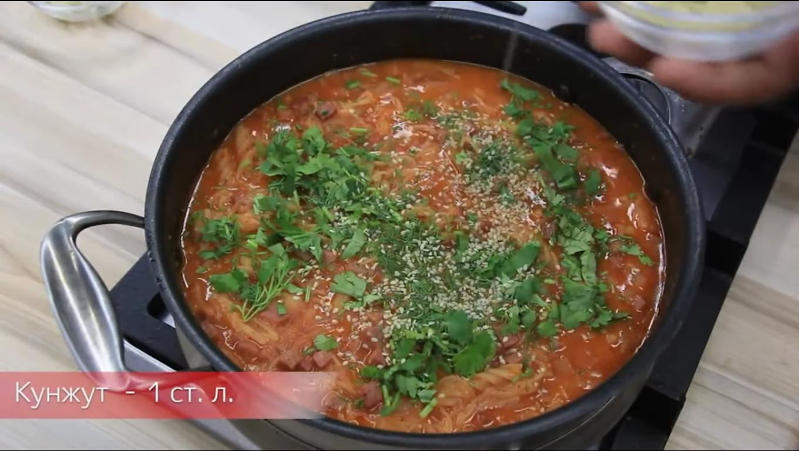

Луковый угар

Более изысканный рецепт.
Ингридиенты
- 5 луковиц (средних)
- 3 зубчикачеснока
- Лимонный сок
- Стакан апельсинового сока
- 60 гр макарон (спиральки)
- Лапша (мелкая вермешелька)
- 3 картошины
- 200 гр ветчины
- Кунжут
- 3 ст ложки паприки
- 1 ст ложка белого перца
- Сухарики или чипсы
- Петрушка, укроп
- Соль
Шаги
- Отварить картошку.
- Режем и поджариваем лук на тихом огне до золотистого цвета.
- Залить лук апельсиновым соком (1 стакан), дать потомиться на тихом огне 2-3 минуты.
- Добавить картошку к луку и смять в пюре.
- Мелко покрошить ветчину кубиками, добавить к пюре.
- Добавить ст ложку перца, 3 ст ложки паприки, 5 ст ложек соли
- Добавляем макароны и лапшу, доливаем воду и доводим до готовности.
- После тушения приправить лимонным соком (пару чайных ложек).
- Когда блюдо готова, посыпать чипсами или сухариками вместе с петрушкой и укропом.
- Посыпать кунжутом.
- Натёртый чеснок аккуратно распределить по поверхности блюда.
Блюдо можно подать с томатным соком и ломтиками лаваша.
Home